Xavier Van de Woestyne
Statistiques et suivi
Accueil
Tags
Articles
Projets
Galeries
Activité
Suivi des logs
Tâches et engagements
Suivi des logs

(:logs_counter 369) (:minuts_counter 57406) (:sectors_counters (("visual" 4465) ("programming" 21710) ("maintenance" 4690) ("research" 16481) ("audio" 640) ("reading" 650) ("writing" 8770))) (:start_date #015H22) (:last_update #020F24)
Statistiques globales
Dernières entrées